pacman::p_load(
ggdist, # stat_halfeye(), stat_dots()
ggridges, # geom_density_ridges(), stat_density_ridges()
ggthemes, # theme_economist(), theme_ridges()
colorspace, # lighten()
tidyverse, # ggplot2 + data wrangling
scales, # comma_format()
plotly, # interactive charts
patchwork, # side-by-side layouts
janitor, # clean_names()
kableExtra # styled tables
)Hands-on Exercise 4a
Visualising Distribution — Ridgeline & Raincloud Plots
1 Visualising Distribution — Ridgeline & Raincloud Plots
Welcome! This exercise introduces two advanced distribution techniques applied to COVID-19 sub-district data for DKI Jakarta:
- Ridgeline plot — compares distribution shapes across many groups on a shared axis using overlapping density curves. Best for 5+ groups.
- Raincloud plot — layers a half-density cloud (above the line), a compact boxplot (on the line), and individual rain dots (below the line). Nothing is hidden about the distribution.
1.1 Getting Started
1.1.1 Installing and Loading Packages
1.1.2 Importing and Preparing Data
covid_raw <- read_csv("data/COVID-19_DKI_Jakarta.csv")
covid <- covid_raw %>%
janitor::clean_names() %>%
rename(id = sub_district_id, subdistrict = sub_district) %>%
mutate(
cfr = if_else(positive > 0, death / positive * 100, NA_real_),
recovery_rate = if_else(positive > 0, recovered / positive * 100, NA_real_),
active = positive - recovered - death,
# Short two-line city labels — prevent x-axis overlap in un-flipped charts
city_label = case_when(
str_detect(toupper(city), "SELATAN") ~ "Jkt.\nSelatan",
str_detect(toupper(city), "UTARA") ~ "Jkt.\nUtara",
str_detect(toupper(city), "BARAT") ~ "Jkt.\nBarat",
str_detect(toupper(city), "PUSAT") ~ "Jkt.\nPusat",
str_detect(toupper(city), "TIMUR") ~ "Jkt.\nTimur",
str_detect(toupper(city), "SERIBU") ~ "Kep.\nSeribu",
TRUE ~ city
)
)
# Sub-districts with reliable CFR (>= 10 positive cases)
covid_cfr <- covid %>% filter(!is.na(cfr), positive >= 10)1.2 Data Exploration
Show code
p_count <- covid %>%
count(city, name = "n") %>%
ggplot(aes(x = reorder(city, n), y = n, fill = city)) +
geom_col(width = 0.65, show.legend = FALSE, alpha = 0.85) +
geom_text(aes(label = n), hjust = -0.2, fontface = "bold", size = 3.8) +
coord_flip() +
scale_fill_brewer(palette = "Set2") +
scale_y_continuous(expand = expansion(mult = c(0, 0.2))) +
labs(title = "Sub-districts per City",
subtitle = "Unequal coverage affects ridgeline curve smoothness",
x = NULL, y = "Sub-districts") +
theme_minimal(base_size = 11)
p_missing <- tibble(
Variable = c("positive","recovered","death","cfr","recovery_rate"),
Missing = c(sum(is.na(covid$positive)), sum(is.na(covid$recovered)),
sum(is.na(covid$death)), sum(is.na(covid$cfr)),
sum(is.na(covid$recovery_rate)))
) %>%
ggplot(aes(x = reorder(Variable, Missing), y = Missing)) +
geom_col(fill = "#e74c3c", width = 0.55, alpha = 0.85) +
geom_text(aes(label = Missing), hjust = -0.2, fontface = "bold", size = 3.8) +
coord_flip() +
scale_y_continuous(expand = expansion(mult = c(0, 0.3))) +
labs(title = "Missing Values per Column",
subtitle = "cfr / recovery_rate NA where positive = 0",
x = NULL, y = "Count") +
theme_minimal(base_size = 11)
p_count | p_missing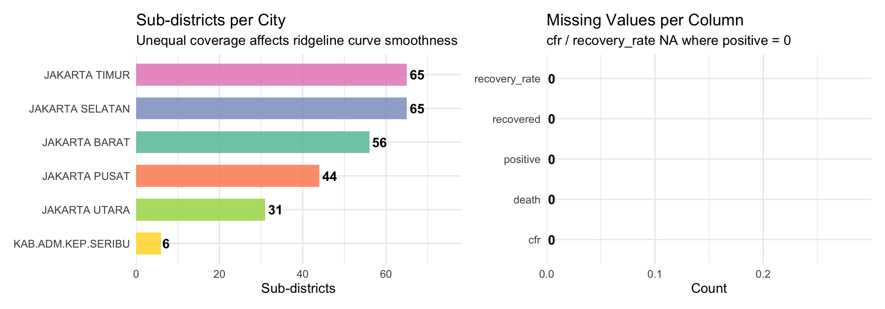
NoteWhat I Learned
The dataset is cross-sectional — cumulative totals per sub-district with no time dimension. Jakarta Timur has the most sub-districts (~65), producing smoother ridgeline density curves. cfr and recovery_rate are NA where positive = 0 to prevent division by zero.
Show code
p1 <- ggplot(covid, aes(x = positive)) +
geom_histogram(bins = 35, fill = "#e74c3c", colour = "white", alpha = 0.85) +
scale_x_continuous(labels = comma_format()) +
labs(title = "Positive Cases", x = "Cases / sub-district", y = "Count") +
theme_minimal(base_size = 10)
p2 <- ggplot(covid, aes(x = recovered)) +
geom_histogram(bins = 35, fill = "#27ae60", colour = "white", alpha = 0.85) +
scale_x_continuous(labels = comma_format()) +
labs(title = "Recovered", x = "Recovered / sub-district", y = "Count") +
theme_minimal(base_size = 10)
p3 <- ggplot(covid, aes(x = death)) +
geom_histogram(bins = 35, fill = "#7f8c8d", colour = "white", alpha = 0.85) +
scale_x_continuous(labels = comma_format()) +
labs(title = "Deaths", x = "Deaths / sub-district", y = "Count") +
theme_minimal(base_size = 10)
p1 | p2 | p3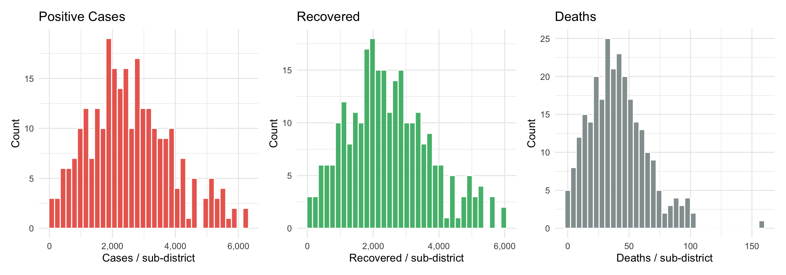
NoteWhat I Learned
All three metrics are heavily right-skewed — most sub-districts record modest counts but a few hotspot sub-districts hold extreme values. A boxplot compresses this right tail to near-invisibility. A ridgeline plot exposes the full density shape per city; a raincloud makes each individual hotspot pinpointable as a named dot.
Show code
p_b1 <- ggplot(covid,
aes(x = reorder(city, positive, FUN = median), y = positive, fill = city)) +
geom_boxplot(alpha = 0.75, outlier.size = 0.8,
outlier.alpha = 0.5, outlier.colour = "#c0392b") +
stat_summary(fun = mean, geom = "point", shape = 23,
size = 3, fill = "white", colour = "black") +
coord_flip() +
scale_fill_brewer(palette = "Set2") +
scale_y_continuous(labels = comma_format()) +
labs(title = "Positive Cases by City",
subtitle = "Ordered by median. Red dots = hotspot sub-districts",
x = NULL, y = "Cases / sub-district") +
theme_minimal(base_size = 10) + theme(legend.position = "none")
p_b2 <- ggplot(covid_cfr,
aes(x = reorder(city, cfr, FUN = median), y = cfr, fill = city)) +
geom_boxplot(alpha = 0.75, outlier.size = 0.8,
outlier.alpha = 0.5, outlier.colour = "#c0392b") +
stat_summary(fun = mean, geom = "point", shape = 23,
size = 3, fill = "white", colour = "black") +
coord_flip() +
scale_fill_brewer(palette = "Set1") +
scale_y_continuous(labels = function(x) paste0(round(x, 1), "%")) +
labs(title = "CFR by City (>= 10 positive)",
subtitle = "Motivates raincloud to reveal individual sub-districts",
x = NULL, y = "CFR (%)") +
theme_minimal(base_size = 10) + theme(legend.position = "none")
p_b1 | p_b2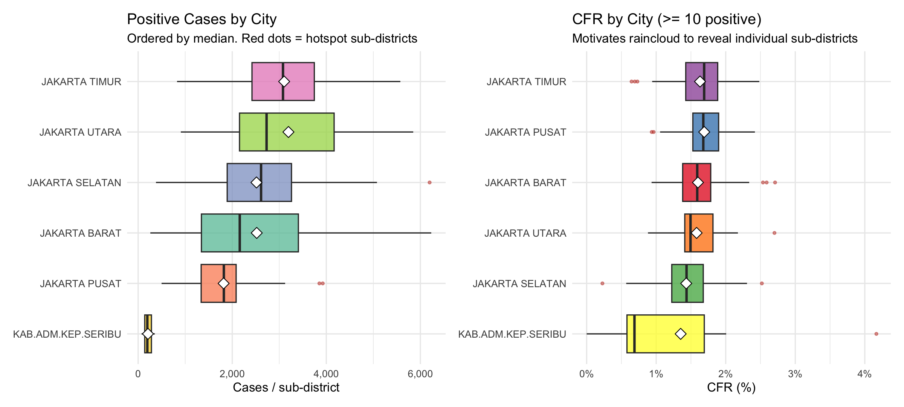
NoteWhat I Learned
The boxplots confirm inter-city differences but hide distribution shape. The long upper whiskers and red outlier dots show that hotspot sub-districts exist — but the boxplot cannot reveal whether those outliers are isolated extreme cases or part of a broader secondary cluster. This directly motivates the ridgeline and raincloud plots below.
1.3 Visualising Distribution with Ridgeline Plot
A ridgeline plot reveals distribution shape across many groups simultaneously. Most useful when comparing 5+ groups where separate panels waste space.
Note
ggridges provides two main geoms:
geom_density_ridges()— estimates KDE density then draws ridgelines.geom_density_ridges_gradient()— same but fill colour varies along x.
bandwidth controls KDE smoothing and must be scaled to the data range — the reference uses bandwidth = 3.4 for exam scores (range ~60 units); for case counts (range ~6,000) we use bandwidth = 300.
1.3.1 Basic Ridgeline Plot
Show code
ggplot(covid,
aes(x = positive, y = reorder(city, positive, FUN = median))) +
geom_density_ridges(scale = 3, rel_min_height = 0.01, bandwidth = 300,
fill = lighten("#7097BB", .3), colour = "white") +
scale_x_continuous(name = "Positive cases per sub-district",
labels = comma_format(), expand = c(0, 0)) +
scale_y_discrete(name = NULL, expand = expansion(add = c(0.2, 2.6))) +
labs(title = "Distribution of Sub-district Positive Cases by City",
subtitle = "Cities ordered by median. Heavy right-skew visible in all cities") +
theme_ridges(font_size = 11)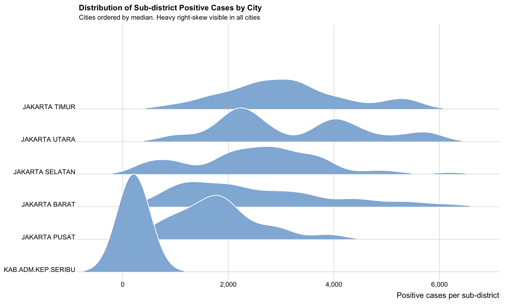
NoteWhat I Learned
bandwidth = 300 scales KDE smoothing to match the data range. scale = 3 allows moderate ridge overlap keeping all city labels readable. rel_min_height = 0.01 trims tails below 1% of peak height, preventing invisible ridge “legs” extending along the x-axis. All cities show right-skewed shapes with long hotspot tails.
1.3.2 Varying Fill Colours Along the X Axis
Show code
ggplot(covid,
aes(x = positive, y = reorder(city, positive, FUN = median),
fill = after_stat(x))) +
geom_density_ridges_gradient(scale = 3, rel_min_height = 0.01) +
scale_x_continuous(name = "Positive cases per sub-district",
labels = comma_format(), expand = c(0, 0)) +
scale_y_discrete(name = NULL, expand = expansion(add = c(0.2, 2.6))) +
scale_fill_viridis_c(name = "Cases", option = "C", labels = comma_format()) +
labs(title = "Sub-district Cases — Gradient Fill",
subtitle = "Yellow/orange = hotspot sub-districts. Purple = low-case areas") +
theme_ridges(font_size = 11, grid = TRUE) +
theme(legend.position = "right")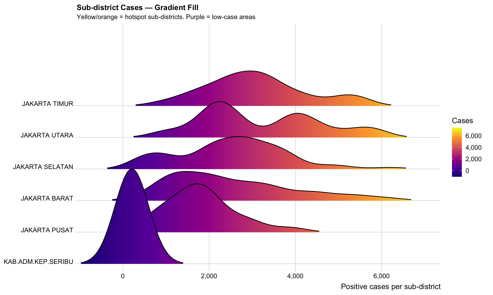
Important
geom_density_ridges_gradient() does not support alpha transparency — gradient fill and alpha are mutually exclusive.
NoteWhat I Learned
after_stat(x) maps case count to fill colour, adding a second encoding channel that reinforces the x-axis position. Cities with yellow-orange extending further right contain more extreme hotspot sub-districts relative to their city population.
1.3.3 Mapping ECDF Probabilities onto Colour
Show code
ggplot(covid,
aes(x = positive, y = reorder(city, positive, FUN = median),
fill = 0.5 - abs(0.5 - after_stat(ecdf)))) +
stat_density_ridges(geom = "density_ridges_gradient", calc_ecdf = TRUE) +
scale_x_continuous(name = "Positive cases per sub-district",
labels = comma_format(), expand = c(0, 0)) +
scale_y_discrete(name = NULL, expand = expansion(add = c(0.2, 2.6))) +
scale_fill_viridis_c(name = "Tail\nprobability", direction = -1, option = "D") +
labs(title = "Sub-district Cases — ECDF Probability Mapped to Colour",
subtitle = "Bright = typical sub-districts near median. Dark = rare extreme hotspot areas") +
theme_ridges(font_size = 11, grid = TRUE)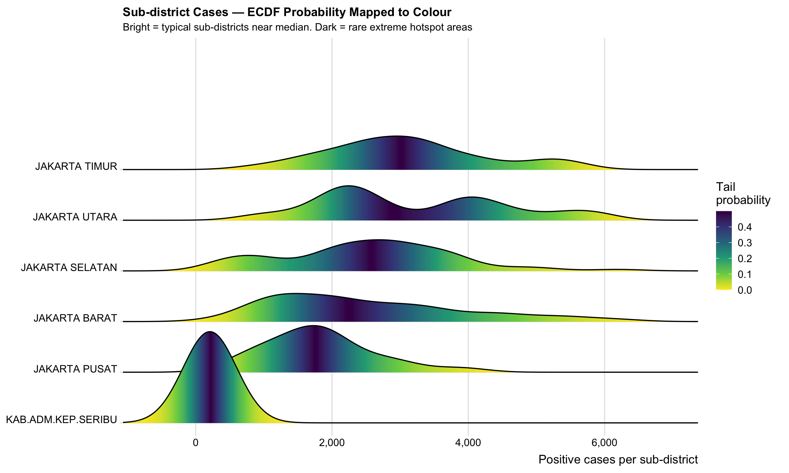
Important
calc_ecdf = TRUE is mandatory in stat_density_ridges() when using after_stat(ecdf).
NoteWhat I Learned
The ECDF approach answers: “where does the bulk of probability mass sit relative to the median?” Bright = typical sub-district case counts; dark = rare extreme hotspots. The width of the bright band reveals whether sub-district burden is evenly spread or concentrated in a few extreme areas.
1.3.4 Ridgeline with Quantile Lines
Show code
ggplot(covid,
aes(x = positive, y = reorder(city, positive, FUN = median),
fill = factor(after_stat(quantile)))) +
stat_density_ridges(geom = "density_ridges_gradient", calc_ecdf = TRUE,
quantiles = 4, quantile_lines = TRUE) +
scale_x_continuous(name = "Positive cases per sub-district",
labels = comma_format(), expand = c(0, 0)) +
scale_y_discrete(name = NULL, expand = expansion(add = c(0.2, 2.6))) +
scale_fill_viridis_d(name = "Quartile", alpha = 0.7) +
labs(title = "Sub-district Cases — Quartile Colouring",
subtitle = "Vertical lines = Q1 / Median / Q3. Wide Q4 = concentrated extreme hotspots") +
theme_ridges(font_size = 11, grid = TRUE)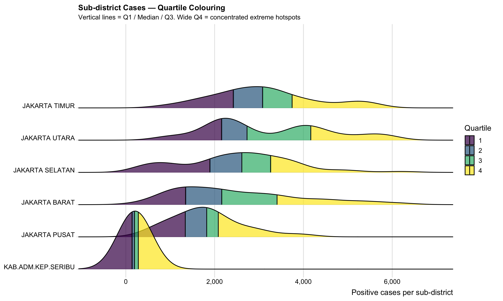
Show code
ggplot(covid,
aes(x = positive, y = reorder(city, positive, FUN = median),
fill = factor(after_stat(quantile)))) +
stat_density_ridges(geom = "density_ridges_gradient", calc_ecdf = TRUE,
quantiles = c(0.025, 0.975)) +
scale_x_continuous(name = "Positive cases per sub-district",
labels = comma_format(), expand = c(0, 0)) +
scale_y_discrete(name = NULL, expand = expansion(add = c(0.2, 2.6))) +
scale_fill_manual(
name = "Probability\nregion",
values = c("#FF0000A0", "#A0A0A0A0", "#0000FFA0"),
labels = c("Bottom 2.5%", "Middle 95%", "Top 2.5%")
) +
labs(title = "Sub-district Cases — 2.5% and 97.5% Tail Highlighting",
subtitle = "Red = near-zero sub-districts. Blue = extreme top-2.5% hotspot sub-districts") +
theme_ridges(font_size = 11, grid = TRUE)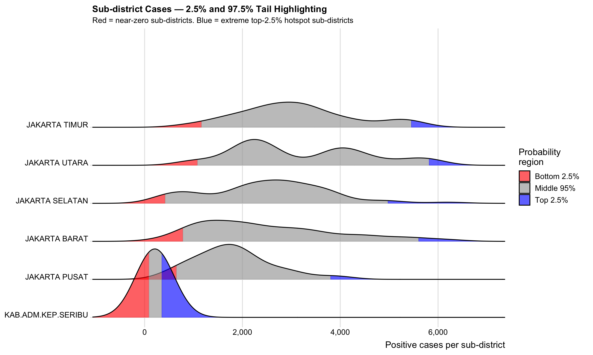
NoteWhat I Learned
quantiles = 4 passes the number of equal sections; quantiles = c(0.025, 0.975) passes specific probability cut points — syntactically different, producing different outputs. The blue top-2.5% region identifies the most extreme hotspot sub-districts for priority resource allocation.
1.4 Visualising Distribution with Raincloud Plot
A raincloud plot is built in four incremental steps following r4va.netlify.app/chap09.
We use CFR (Case Fatality Rate) as the y‑variable and compare it across cities.
Steps 1–3 show the chart in its natural orientation (cities on x‑axis, CFR on y‑axis).
coord_flip() and theme_economist() are applied only at the final step to produce the horizontal raincloud silhouette.
1.4.1 Step 1 — Half Eye: stat_halfeye()
Show code
ggplot(covid_cfr,
aes(x = reorder(city_label, cfr, FUN = median), y = cfr)) +
stat_halfeye(
adjust = 0.5,
justification = -0.2,
.width = 0,
point_colour = NA
) +
scale_y_continuous(labels = function(x) paste0(round(x, 1), "%")) +
labs(title = "Sub-district CFR by City — Step 1: Half Eye",
subtitle = ".width = 0 and point_colour = NA suppress the slab interval",
x = NULL, y = "Case Fatality Rate (%)") +
theme_bw(base_size = 12)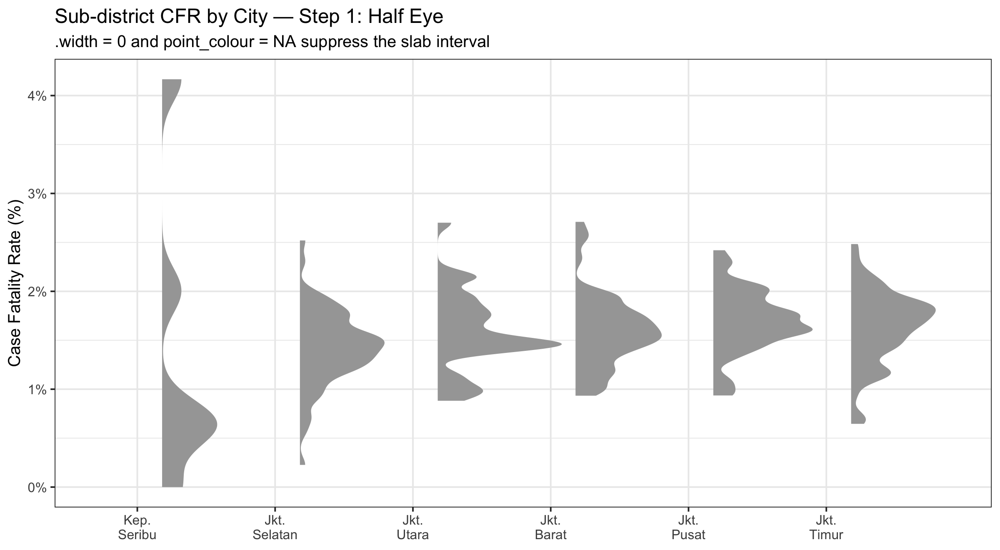
NoteWhat I Learned
stat_halfeye() draws a one‑sided density — flat on one side, curved on the other — leaving the opposite side free for the boxplot and dot layers. adjust = 0.5 uses a narrower KDE bandwidth, appropriate for CFR data (range 0–4%). .width = 0 and point_colour = NA suppress ggdist’s default slab interval and median dot.
1.4.2 Step 2 — Adding the Boxplot: geom_boxplot()
Show code
ggplot(covid_cfr,
aes(x = reorder(city_label, cfr, FUN = median), y = cfr)) +
stat_halfeye(
adjust = 0.5,
justification = -0.2,
.width = 0,
point_colour = NA
) +
geom_boxplot(width = .20, outlier.shape = NA) +
scale_y_continuous(labels = function(x) paste0(round(x, 1), "%")) +
labs(title = "Sub-district CFR by City — Step 2: + Boxplot",
subtitle = "width = .20. outlier.shape = NA prevents duplicate dots in Step 3",
x = NULL, y = "Case Fatality Rate (%)") +
theme_bw(base_size = 12)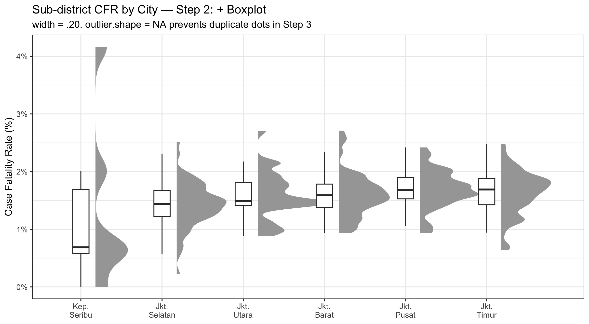
NoteWhat I Learned
width = .20 keeps the boxplot compact. outlier.shape = NA is essential – without it, boxplot outlier dots AND the dots added by stat_dots() in Step 3 would both appear for the same sub‑districts.
1.4.3 Step 3 — Adding Dot Plot: stat_dots()
Show code
city_order <- covid_cfr %>%
group_by(city_label) %>%
summarise(med_cfr = median(cfr, na.rm = TRUE)) %>%
arrange(med_cfr) %>%
pull(city_label)
covid_cfr <- covid_cfr %>%
mutate(
city_ordered = factor(city_label, levels = city_order),
x_pos = as.numeric(city_ordered) * 20 # ← was 10, now 20
)
ggplot(covid_cfr, aes(x = x_pos, y = cfr, group = city_ordered)) +
stat_halfeye(
adjust = 0.6,
justification = -0.08,
.width = 0,
point_colour = NA,
width = 8 # ← caps density at 0.45 × 20 = 9 units rightward
) +
geom_boxplot(
width = 1.5,
outlier.shape = NA
) +
stat_dots(
side = "left",
justification = 3.5,
binwidth = 0.2,
dotsize = 0.4,
width = 0.45 # ← match dots width to halfeye width
) +
scale_x_continuous(
breaks = unique(covid_cfr$x_pos),
labels = city_order,
name = NULL,
expand = expansion(mult = c(0.05, 0.05))
) +
scale_y_continuous(labels = function(x) paste0(round(x, 1), "%")) +
labs(
title = "Sub-district CFR by City — Step 3: + Dots",
x = NULL, y = "Case Fatality Rate (%)"
) +
theme_bw(base_size = 10)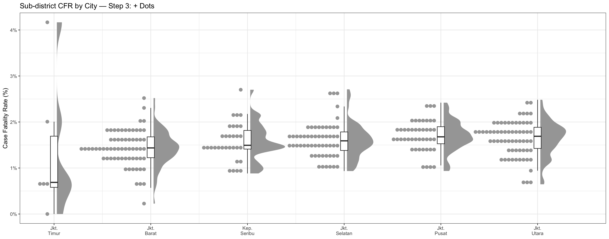
NoteWhat I Learned
stat_dots() creates a stacked dotplot (like a histogram that preserves every point). binwidth = 0.1 groups CFR values into bins of 0.1%. dotsize = 0.3 keeps dots small and readable. side = "left" places the dots on the left side of the boxplot – after flipping, they will hang below (the “rain”).
1.4.4 Final Raincloud — coord_flip() + theme_economist()
Show code
city_order <- covid_cfr %>%
group_by(city_label) %>%
summarise(med_cfr = median(cfr, na.rm = TRUE)) %>%
arrange(med_cfr) %>%
pull(city_label)
covid_cfr <- covid_cfr %>%
mutate(
city_ordered = factor(city_label, levels = city_order),
x_pos = as.numeric(city_ordered) * 20
)
ggplot(covid_cfr, aes(x = x_pos, y = cfr, group = city_ordered)) +
stat_halfeye(
adjust = 0.6,
justification = -0.08,
.width = 0,
point_colour = NA,
width = 7
) +
geom_boxplot(
width = 1.2,
outlier.shape = NA
) +
stat_dots(
side = "left",
justification = 4,
binwidth = 0.2,
dotsize = 0.2,
width = 0.2
) +
coord_flip() + # ← flips to horizontal raincloud
scale_x_continuous( # after flip: this becomes the horizontal CFR axis
breaks = unique(covid_cfr$x_pos),
labels = city_order,
name = NULL,
expand = expansion(mult = c(0.05, 0.05))
) +
scale_y_continuous( # after flip: this becomes the vertical CFR axis
labels = function(x) paste0(round(x, 1), "%"),
name = "Case Fatality Rate (%)"
) +
labs(
title = "Sub-district CFR by City — Raincloud Plot",
x = NULL, y = NULL # city names are on y‑axis after flip
) +
theme_economist(base_size = 11) + # ← professional publishing theme
theme(
axis.text.y = element_text(hjust = 1, face = "bold"),
panel.grid.major.y = element_line(color = "white", linewidth = 0.5),
panel.grid.major.x = element_blank()
)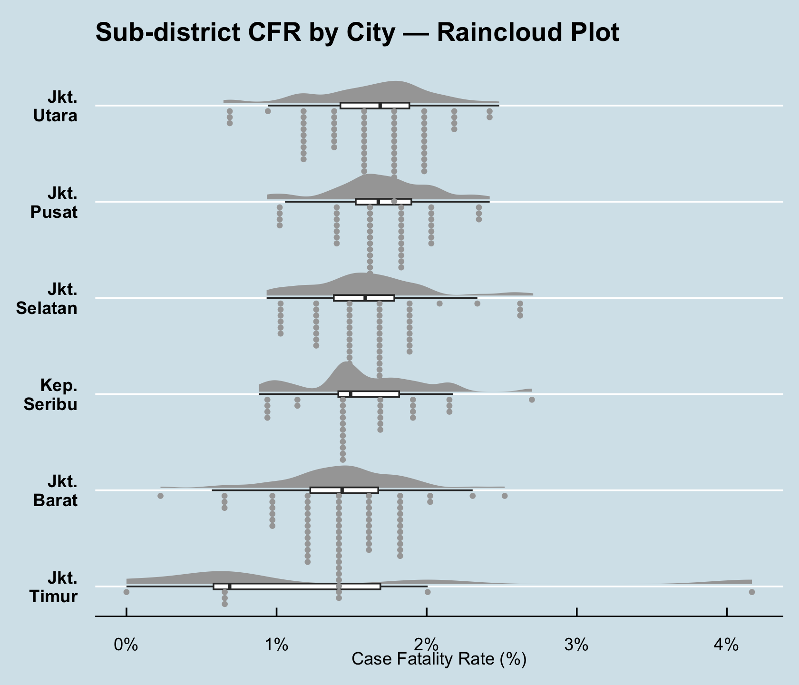
NoteWhat I Learned
coord_flip()is applied only at the final step – exactly as in the reference site.
- The density becomes the “cloud” above the line, the boxplot sits on the line, and the dots become the “rain” below.
theme_economist()gives a professional, publication‑ready look (light blue background, clean grid lines).
- The plot reveals that Kepulauan Seribu has very different CFR characteristics: a few isolated, extreme dots far from the main cluster. Jakarta Timur shows the widest spread, while Jakarta Pusat is tightly clustered at low CFR values.
1.5 Interactive Exploration
The raincloud plots reveal distribution patterns; the interactive charts below identify which specific sub-district each dot represents.
1.5.1 Interactive CFR by Sub-district
Show code
hover_cfr <- covid_cfr %>%
mutate(tip = paste0(
"<b>", subdistrict, "</b><br>",
"District: ", district, "<br>",
"City: ", city, "<br>",
"Positive: ", comma(positive), "<br>",
"Deaths: ", death, "<br>",
"CFR: ", round(cfr, 2), "%"
))
plot_ly() %>%
add_trace(
data = hover_cfr, x = ~cfr,
y = ~reorder(city, cfr, FUN = median),
type = "box", hoverinfo = "none",
fillcolor = "rgba(200,200,200,0.3)",
line = list(color = "grey50"), showlegend = FALSE
) %>%
add_trace(
data = hover_cfr, x = ~cfr,
y = ~reorder(city, cfr, FUN = median),
type = "scatter", mode = "markers",
marker = list(size = 5, opacity = 0.65, color = "#e74c3c",
line = list(color = "white", width = 0.5)),
text = ~tip, hoverinfo = "text", showlegend = FALSE
) %>%
layout(
title = list(
text = "<b>Sub-district CFR by City — Interactive</b><br><sup>Hover dots to identify each sub-district: name, district, cases, deaths, CFR</sup>",
x = 0.5
),
xaxis = list(title = "Case Fatality Rate (%)", ticksuffix = "%"),
yaxis = list(title = ""),
plot_bgcolor = "rgba(0,0,0,0)",
paper_bgcolor = "rgba(0,0,0,0)"
)1.5.2 Interactive Positive Cases by Sub-district
Show code
hover_pos <- covid %>%
mutate(tip = paste0(
"<b>", subdistrict, "</b><br>",
"District: ", district, "<br>",
"City: ", city, "<br>",
"Positive: ", comma(positive), "<br>",
"Recovered: ", comma(recovered), "<br>",
"Deaths: ", death, "<br>",
"Active: ", comma(active)
))
plot_ly() %>%
add_trace(
data = hover_pos, x = ~positive,
y = ~reorder(city, positive, FUN = median),
type = "box", hoverinfo = "none",
fillcolor = "rgba(200,200,200,0.3)",
line = list(color = "grey50"), showlegend = FALSE
) %>%
add_trace(
data = hover_pos, x = ~positive,
y = ~reorder(city, positive, FUN = median),
type = "scatter", mode = "markers",
marker = list(size = 5, opacity = 0.6, color = "#3498db",
line = list(color = "white", width = 0.5)),
text = ~tip, hoverinfo = "text", showlegend = FALSE
) %>%
layout(
title = list(
text = "<b>Sub-district Positive Cases by City — Interactive</b><br><sup>Hover to identify hotspot sub-districts: name, cases, recoveries, deaths, active</sup>",
x = 0.5
),
xaxis = list(title = "Positive cases per sub-district", tickformat = ","),
yaxis = list(title = ""),
plot_bgcolor = "rgba(0,0,0,0)",
paper_bgcolor = "rgba(0,0,0,0)"
)
NoteWhat I Learned
The static raincloud shows where extreme dots are; the interactive chart names which sub‑districts they belong to. Hovering reveals the sub‑district name, district, city, and all case metrics – bridging distributional understanding with operational intelligence.
1.6 Summary of Techniques
| # | Technique | Key function / argument | Key insight for Jakarta COVID data |
|---|---|---|---|
| 1 | Basic ridgeline | geom_density_ridges(bandwidth = 300) | All cities right-skewed; hotspot tails differ in extent across cities |
| 2 | Gradient fill ridgeline | geom_density_ridges_gradient() + after_stat(x) + viridis | Warm gradient regions confirm cities with most extreme hotspot sub-districts |
| 3 | ECDF ridgeline | stat_density_ridges(calc_ecdf = TRUE) + after_stat(ecdf) | Narrow bright = typical; dark tail = rare extremes needing resources |
| 4 | Quartile ridgeline | stat_density_ridges(quantiles = 4, quantile_lines = TRUE) | Wide Q4 confirms top 25% of sub-districts carry disproportionate burden |
| 5 | Tail cut-point ridgeline | stat_density_ridges(quantiles = c(0.025, 0.975)) | Blue top-2.5% identifies the most extreme hotspot sub-districts per city |
| 6 | Step 1-3: Building raincloud (un-flipped) | stat_halfeye(.width=0) + geom_boxplot(outlier.shape=NA) + stat_dots(side='left') | Each layer added separately shows function and role of each raincloud element |
| 7 | Final raincloud — CFR (flipped + theme_economist) | coord_flip() + theme_economist(); adjust=0.5, binwidth=0.1, dotsize=0.3 | Kepulauan Seribu CFR is distinct — extreme isolated outlier dots visible |
| 8 | Interactive CFR | plot_ly() box + scatter with hover text | Sub-district name, district, and all case metrics visible on hover |
| 9 | Interactive Positive Cases | plot_ly() box + scatter with hover text | Identifies which sub-districts drive the positive-case distribution |
1.7 Final Remarks
This exercise demonstrated the full range of modern distribution visualisation: from ridgeline plots (with gradient, ECDF, and quantile variants) to raincloud plots built step by step exactly as in the reference chapter. By applying these techniques to the DKI Jakarta COVID‑19 data, we uncovered that all cities have right‑skewed positive‑case distributions, that CFR varies substantially across cities, and that Kepulauan Seribu behaves very differently from the mainland. Interactive plots then allowed us to identify the specific sub‑districts driving those patterns. Together, these tools provide a complete toolkit for exploring and communicating distributions in public health data.
1.8 References
- Wilke, C. O. R for Visual Analytics, Chapter 9: Visualising Distribution.
- Wilke, C. O. (2019). Fundamentals of Data Visualization.
- Kay, M. (2023). ggdist: Visualizations of Distributions and Uncertainty.
- Allen, M. et al. (2021). Raincloud plots.